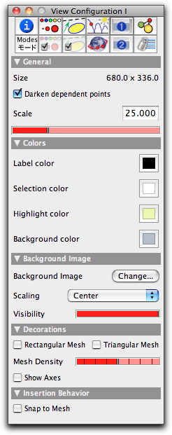

Controlling the Views
With the inspector button
 you can access the properties of the currently active view. The corresponding inspector window contains the following controls:
you can access the properties of the currently active view. The corresponding inspector window contains the following controls: |
| The view inspector window |
In particular, there are controls that govern the scaling behavior and the opacity of background images. Background images can be loaded with the menu entry "File/Set background image." Background images are extremely useful not only for decorative purposes. By this it is also possible to make geometric analyses of photographs and other pictures. In particular, the Projective Transformation features help in working accurately with perspective distortions.
 |
| Analysis of a Gaudí building |
The inspector window also contains elements for controlling the background color, meshes, and coordinate axes. These controls are also available directly in the ports.
Page last modified on Wednesday 27 of July, 2011 [22:43:37 UTC].
The original document is available at
http://doc.cinderella.de/tiki-index.php?page=Controlling%20the%20Views